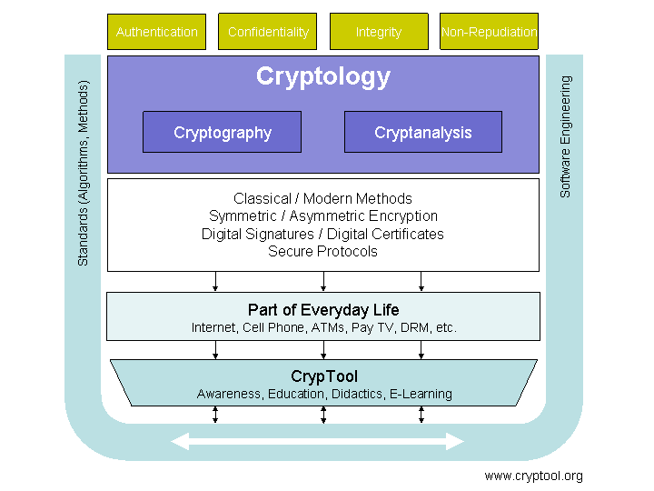

W programie CrypTool zawarto historyczne oraz wspó³czesne algorytmy kryprograficzne, a tak¿e elementy ich kryptoanalizy. Wygodny, graficzny interfejs pozwala na poznawanie i testowanie algorytmów. W ten sposób u¿ytkownik szybko mo¿e poznaæ mo¿liwoœci, ale tak¿e ograniczenia metod kryptograficznych.
Definicje kryptologii mo¿na znaleŸæ tutaj. Przegl¹d algorytmów zaimplementowanych w programie CrypTool dostêpny jest na stronie startowej..
Poni¿szy diagram przedstawia cele i elementy kryptologii oraz znaczenie programu CrypTool.

Kolejny rysunek pokazuje miejsce kryptologii w szerszym kontekœcie nauki, biznesu. Jak widaæ kryptologia jest dziedzin¹ na pograniczu tak praktycznych zagadnieñ jak bezpieczeñstwo systemów informatycznych, czy zarz¹dzanie ryzykiem, a teoretycznymi dyscyplinami matematyki i informatyki.
Poprawne i optymalne pod wglêdem kosztów planowanie cech bezpieczeñstwa systemów IT (tj. uwierzytelnianie, poufnoœæ, spójnoœæ, niepodwa¿alnoœæ) nie jest mo¿liwe bez choæby podstawowego zrozumienia kryptologii.
Bezpieczeñstwo systemów informatycznych (ang. IT security) to termin obejmuj¹cy wiele dzia³añ, których celem jest zapewnienie ochrony informacji przechowywanej w formie elektronicznej. Chcemy chroniæ krytyczne dane, tak aby nie dopuœciæ do zaburzeñ w procesach biznesowych.
Za bezpieczeñstwo IT odpowiadaj¹ nie tylko zabezpieczenia krypograficzne, wa¿ne jest tak¿e poprawne zarz¹dzanie systemami ochrony, uwzglêdnianie aspektów prawnych, monitorowanie bezpieczeñstwa, ochrona przeciw wirusowa, szybkie aktualizowanie oprogramowania, reakcja na sytuacje kryzysowe i zapewnienie ci¹g³oœci procesom biznesowym. Dobrym Ÿród³em informacji na ten temat jest amerykañska agencja rz¹dowa NIST.
Zarz¹dzanie ryzykiem to szersze od bezpieczeñstwa IT pojêcie, którego celem jest zapewnienie po¿¹danej ochrony dla krytycznej infrastruktury. Zarz¹dzanie ryzykiem mo¿na zdefiniowaæ jako ci¹g³y proces minimalizowania ryzyka biznesowego. Zawiera on zarówno elementy ogólnego ryzyka dzia³ania, a tak¿e elementy ryzyka finansowego.
Zarówno firmy, organizacje, jak i osoby prywatne musz¹ radziæ sobie z ryzykiem podczas normalnego ¿ycia. Jednak systematyczne zarz¹dzenie ryzykiem wzie³o siê z przemys³u finansowego. Dzisiaj istnieje wiele praw i zasad zapewniaj¹cych pewn¹ kontrolê dzia³aniom biznesowym (np. KonTraG, Sarbanes-Oxley Act lub Basel II).
Ryzyka wystêpuj¹ce w firmie mo¿emy podzieliæ na ryzyka operacyjne (np. za³amanie siê lub zad³awienie systemu IT), albo ryzyka finansowe (ryzyka kredytowe, ryzyko utraty p³ynnoœci, ryzyka rynkowe itd.). Istnieje wiele metod pozwalaj¹cych identyfikowaæ, mierzyæ i kontrolowaæ ryzyko.
Zarz¹dzanie ryzykiem nie oznacza wcale ca³kowite jego wyeliminowanie. Celem jest poprawne zidentyfikowanie zagro¿eñ, okreœlenie prawdopodobieñstwa wyst¹pienia, analizy kosztów zapobiegania oraz zaniechania. Czêsto optymalnym rozwi¹zaniem bêdzie ubezpieczenie siê od ryzyka, zamiast jego eliminacja.
�ród³a: